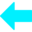

Editando un punto existente. Haz clic en la imagen para moverlo de lugar.
Haz clic en la imagen a la derecha para obtener las coordenadas de origen.
Agrega paneles y presiona "Guardar Manual".
Filas tipo "Etiqueta: Valor" que se muestran en la tarjeta (ej. Serial Number, o el código de colores de cableado). El color por fila es opcional.